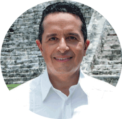

Carlos Joaquín González
Gobernador Constitucional del Estado de Quintana Roo
Contador Público graduado de la Universidad de Yucatán.
Adicionalmente, curso una especialidad en Alta Dirección en el Instituto Tecnológico y de Estudios Superiores de Monterrey.
Colaboró en empresas como Aerovías Caribe, AeroCozumel y la empresa regional de telefonía móvil Portatel del Sureste. Esta última estableció en Playa del Carmen, Quintana Roo el centro de operaciones con miras a su expansión por todo el estado.
Del 2002 al 2005 se incorpora en el Ayuntamiento de Solidaridad como Tesorero Municipal. Durante su gestión la consultora Standard & Poors le otorga el reconocimiento como uno de los municipios con mejor administración de finanzas en la República Mexicana.
Del 2005 al 2008 es electo como Presidente Municipal de Solidaridad con el número más alto de votos en la historia de este territorio.
Desde esta posición se convierte presidente de la Asociación de Municipios Costeros de México, donde en coordinación con la Conferencia Nacional de Municipios de México logra la asignación de $3,500 millones de pesos a los municipios en materia de seguridad pública.
Más tarde, la Organización de las Naciones Unidas le otorgó el Premio Internacional de Equidad de Género para gobiernos locales por su política denominada “El valor de las mujeres”. Este instrumento sostenía un enfoque de empoderamiento de la mujer e integralidad de géneros.
De 2008 al 2009 es invitado a colaborar con el gobierno del estado de Quintana Roo como Secretario de Turismo. Durante esta gestión se dedicó a promover los destinos turísticos del estado, como consecuencia aumentaron los niveles de ocupación hotelera y la derrama económica en la entidad por este concepto. Asimismo coordinó el proyecto de recuperación de playas, incluyendo su esquema financiero que contempló reformas a la Ley Federal de Derechos.
En 2009 fue electo para la Diputación Federal por el tercer Distrito Electoral con sede en Cancún. Ya en esta responsabilidad es nuevamente electo como presidente de la Comisión de Turismo de la Cámara de Diputados.
En su labor legislativa destaca la actualización de la ley General de Turismo y la interlocución con organizaciones protagonistas de la industria turística del país y las autoridades en sus distintos ámbitos de competencia.
En 2012 es nombrado por el presidente electo, Lic. Enrique Peña Nieto, coordinador de Turismo del equipo de transición. Desde esta posición se realizó un diagnóstico de la industria turística a escala nacional, colaborando con actores, organizaciones y líderes de opinión de todos los sectores.
Ese mismo año, es nombrado Subsecretario de Operación Turística de la Secretaría de Turismo del Gobierno Federal Mexicano.
A partir del 30 de diciembre de 2013 y a raíz de la reestructura en la Secretaría de Turismo, funge como Subsecretario de Innovación y Desarrollo Turístico, cargo que desempeñó hasta diciembre del 2015.
El 05 de junio de 2016 es electo gobernador del estado de Quintana Roo con el 45.6% de los votos (fuente: IEQROO) http://www.ieqroo.org.mx. La coalición de partidos llamada UNE-Una Nueva Esperanza- agrupó al Partido Acción Nacional y al partido de la Revolución Democrática quienes apoyaron en la candidatura y juntos destronamos al Partido Revolucionario Institucional del gobierno del estado de Quintana Roo, que logró un histórico resultado.